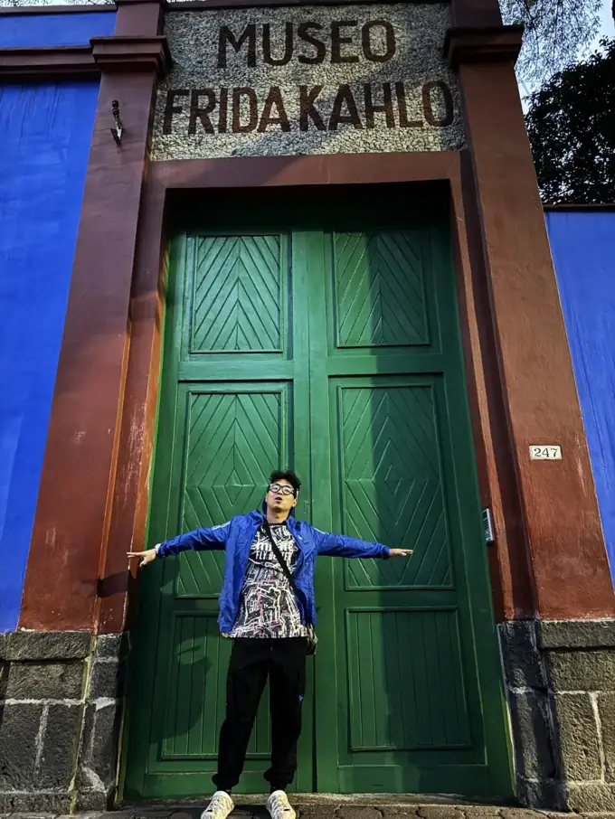

Foreword · 🌶️ Mexico City, Mexico
A three-day weekend, spent running in Mexico
In September I was due to fly home to China. Before I actually landed there, I kept wanting a little rehearsal first — just to feel out what it’s like to leave the U.S. and come back in.
It was my first time crossing a border on my own, so I was a bit nervous. Fine, pick somewhere close, then: Canada or Mexico.
I love running marathons, and when I go to a new country I want to run down its single most famous street — otherwise the trip doesn’t really count.
One round of searching, and there it was: the Mexico City Marathon, right at the end of August. Latin America’s national marathon, the second biggest in the Americas, basically the Beijing Marathon of this side of the world. And it lined up perfectly with the three-day Labor Day weekend.
So what was there to think about? Let’s go — Mexico City Marathon.

Foreword · 🌶️ Mexico City, Mexico
A quick sketch of Mexico: soccer, ancient civilizations, and aliens
If I had to describe Mexico in a few words: Maya and Aztec civilizations, Latin warmth, soccer fever, corn and chili, and stories about aliens.
My earliest sense of the place really did come from soccer. Watch enough World Cups and you know the green shirts — technically gifted, results usually so-so. In history books, the Maya pyramids were like a stamp printed in the margins of the page. At work, my internship manager happened to be Mexican. And in all those clickbait headlines, “Mexico discovers aliens again” shows up so often that the legend has basically become part of the culture.
Mexico City (CDMX): often called one of the largest cities on earth. Its landmarks include the Metropolitan Cathedral, the National Palace, and one of the biggest public squares in the world — the Zócalo (Constitution Square).

Chapultepec means “grasshopper hill,” and people call it Mexico’s Central Park. Paseo de la Reforma cuts east–west through the city, with the famous Angel of Independence rising in the middle of the road. Coyoacán is an artsy old quarter, best known for Frida Kahlo’s Blue House.
By day it’s the noise of a modern metropolis; by night it’s rumored to be one of the best UFO-watching spots around.
Mexico City isn’t just a collage of the ancient and the modern. It’s a city that wanders between reality and legend: rough but alive, mysterious and warm.

Saturday · 🌶️ Mexico City, Mexico
Arrival: from gridlock to street-food smoke
Fly out from Louisville on Saturday, fly back Monday. Three days, two nights, one marathon.
Breakfast at the airport wasn’t cheap — about the same as the U.S. You can take Uber or DiDi here. My driver only spoke Spanish. The first stretch wove through the city, and the drivers here are unbelievable: two lanes somehow turn into five “potential lanes,” and not a single gap between cars goes to waste.

Air quality is so-so, the car bounced and swayed, but the novelty outweighed the discomfort. During a traffic jam a kid came up to wipe the windshield without asking. A lot of drivers just spread their hands helplessly; some hand over a little change as a token.


We were staying at Meztli Casa Boutique & Spa in Coyoacán: arty, Airbnb-like, not far from the Blue House. We got there a bit after 11, and since Mexico City is two hours behind the U.S. East Coast, we couldn’t check in yet. We dropped our bags and headed to the World Trade Center CDMX to pick up our race packets at the expo.


It was an absolute sea of people — this really is a “national marathon.” At the entrance everyone was waving a sheet of paper, which turned out to be the liability waiver. I signed it letter by letter in Spanish, following an older lady, then finally got inside and picked up my bib.
I was number 20-something thousand. The race packet had water, noodles, rice, supplements, vitamins — the whole lot. Way more generous than U.S. races.

While we waited for the car, Siqi bought a mango cup, dusted with chili powder and salt — fifty pesos, about three dollars.
Then we headed to the Zócalo, and the traffic got even worse. As we got close, the crowd came at us in waves, layer after layer.


History takes on physical mass here: the Metropolitan Cathedral and the National Palace look down over the bustle, and the blue tents of the marathon finish line sat right in the middle of the square.


On a little side street by the square we ate tacos and a burrito — cheap, good, and a chance to use the bathroom. Public toilets here mostly charge a fee, which is very different from the U.S.


In front of the Zócalo we ran into two “shamans” in traditional dress. Feathered headdresses, bundles of herbs in their hands, a clump of burning copal resin in their arms, smoke curling everywhere as they wreathed it around people and muttered under their breath.

This is Mexico’s own limpia, a cleansing ritual: chase off bad luck and negative energy with smoke, and ask for a little good fortune and safety while you’re at it.
Spirituality and folk custom, out in the open in the world’s biggest square. A bit like burning incense for safety at a Chinese temple fair, but looser and livelier here — a totally Mexican kind of everyday spectacle.
I stood and watched for a while, thinking, maybe I should get cleansed too? Then I thought about it and let it go — I’ve been doing good deeds lately, my luck should be fine.

In the evening we went back to Coyoacán. The Blue House had already closed, so we took photos at the green door out front. The food street was bursting with that smoky street-food energy.
I ordered a local snack — foil-grilled sausage with cheese and potato. Tasted good, just a touch greasy. Siqi got a “pretty fancy-looking drink” and an “instant ramen” that was clearly the just-add-hot-water kind, though it did come with an egg. Siqi’s verdict: “No flavor.”


Back at the hotel there was a small party going on — lots of artists, photographers clicking away, the owner in feathered earrings inviting us for a drink. We turned it down politely; we had to sleep early, since I was running the next day. The music thumped through the wall, but I put my earbuds in, and somehow the altitude let me sleep soundly.
Sunday · 🌶️ Mexico City, Mexico
Go! Climbing onto the city’s main axis at altitude
Start line: the Olympic University Stadium — the main venue of the 1968 Olympics.
Early morning, Siqi and I took a cab to the start. The driver could only drop us at the nearest curb, because half the surrounding streets were already closed. We got out and walked toward the Olympic Stadium with tens of thousands of other runners.

This is actually inside the campus of UNAM, the National Autonomous University of Mexico — nicknamed the “Harvard of Latin America,” ranked high in the world, with an enormous campus. The Olympic Stadium was originally the university’s home ground, then hosted the opening ceremony and track events of the 1968 Olympics, and now it’s home to UNAM’s Pumas soccer club.

Siqi found a spot near the start to wait for me, while I drifted into the corral with the crowd.
The corral setup was a little confusing. I first slipped into the blue zone, where a volunteer waved his arms and directed me in Spanish to a different area — I didn’t catch a word. Watching the crowd swell, I waited for him to look away, then quietly slid in anyway. I was secretly pleased with myself: the wisdom of the Chinese runner.
Not long after, I realized the blue zone was actually behind the red zone. So I shuffled along with the blue-zone crowd for ages before finally reaching red — where the runners were long gone. Well, no point wasting the trip, so I used the bathroom there.
Signal was bad, so I could only reach Siqi through WeChat in bits and pieces.

And we’re off. It was fully light by then, and the 2,240 m altitude hit me for the first time. I tried a few deep breaths — it felt okay, not as suffocating as I’d feared.
A little way in, a familiar figure appeared on an overpass in the distance: Siqi. She was holding the DJI Pocket 3 pointed at the course. I waved, shouted something up at her, and it made it into the first clip of the day.


The course was packed. Even in one of the back waves, the crowd never thinned out.
The spectators on the roadside were on fire, shouting Spanish chants I mostly couldn’t understand — but the sound itself was fuel: ¡Ánimo! ¡Vamos! Wedged between drums and whistles, it gets your blood going in an instant.


Soon the course turned into a stretch of campus and greenery. The city noise fell away, shade closed over us, and breath and footsteps settled into the same beat.
Out of the campus, and we were onto Mexico City’s main axis: Chapultepec forest park → Paseo de la Reforma → the Angel of Independence. The avenue is wide, the monument glints gold, and Latin flamboyance shares the frame with capital-city solemnity.


Race · 🌶️ Mexico City, Mexico
The toilet marathon, and a flashback to the red wall
Somewhere past 10K I entered Chapultepec Park.
This is Mexico City’s most famous park, the “Mexican Central Park”: lakes, a zoo, museums, a castle. The course runs right through the middle, tree-shaded, with a huge crowd.


Unfortunately, this was right when I suddenly needed a bathroom.
There weren’t many porta-potties on this course, and wherever you could see one, the line was absurdly long. I told myself, “Hold on a bit, maybe the next one will be emptier” — and the next one was another giant queue.
Some people just leaned in against the bushes, back turned, which instantly reminded me of an old meme: “the red wall at the Beijing Marathon.”
That was the year the Beijing Marathon passed the red wall near Tiananmen, and some runners who couldn’t hold it just went right there, caught dead-on by the media — for a while it became dark comedy in the running scene.
I held it. I’m a man of standards, after all. Kept running.


Out of the park, I ran into Siqi again. We took a photo, she kept cheering, and I kept hunting for a toilet.
Then into the lively Roma / Condesa area, one of the trendiest neighborhoods in the city: cafes, bars, restaurants everywhere, lots of Western tourists and local young people, streets buzzing.


I couldn’t hold it any longer, so I figured I’d duck into a bar, buy the cheapest drink, and borrow the bathroom. I asked — and got a flat no, they don’t offer it. Probably afraid of marathon runners flooding in. I had no cash and no way to even buy a token drink, so I slunk back out onto the course.

Finally, at 25K, I spotted a row of blue-and-pink porta-potties, men and women separated. I got in line without hesitation and treated it as a forced rest stop. About 20 minutes later, it was finally my turn. Pure relief.


Race · 🌶️ Mexico City, Mexico
Reforma, take two: cobblestones toward the Zócalo
Out of the toilet and running again, my body couldn’t find its rhythm for a while — the fatigue came down on me all at once.
The spectators kept the fuel coming: water, bananas, salt, cheers. I picked up a little Spanish too, calling out “agua” (water) and “cola” (Coke) — and to my surprise they understood, and the volunteers handed it right over.


I shot footage as I ran. Today I had the Ace Pro 2, the Meta glasses, and a GO Ultra I’d borrowed off Siqi, so I should have plenty of material.

At the 32.5K aid station, I was sipping a cup of water on the move when a voice popped up behind me: Siqi! She asked if I needed the bathroom — she knows this park well. I said I’d just gone, so we agreed to meet at the finish, no idea who’d get there first.


Then the course returned to Reforma for the second time. This avenue was built in the 19th century by Emperor Maximilian, modeled on the Parisian boulevards, linking Chapultepec Castle to the city center in one straight line.


Today the avenue is lined with towers, banks, sculptures, and plazas — the symbolic stage of Mexico City, where parades and ceremonies have unfolded, with the Angel of Independence at its center witnessing past and present. Running here, you feel layered on top of countless historical moments.


Into the historic center, the cobblestone section begins — watch your footing. Colonial facades line the sides, light and shadow shifting along the eaves. The last stretch is Calle Madero, a narrow pedestrian street running straight from Reforma to the Zócalo.


The crowds here are right up close, cheers bouncing between the stone walls and buildings like an echo chamber, pushing runners forward.
In colonial times this street was called San Francisco, later renamed after the independence hero Francisco I. Madero, and today it’s one of the busiest shopping streets in the city.


In the final kilometers, I ran past a wall. It was covered in photos, and under each one the same word: Desaparecido — the disappeared. The city was cheering, the marathon was rolling on, but that wall reminds you. Some people leave without a sound.


On that same stretch I also passed a woman in an Arsenal shirt. And in the last few kilometers, a photographer caught me doing a not-very-correct Gyökeres celebration.


Near the finish, through an archway, the view suddenly opened up: the Zócalo, Constitution Square. This was once the heart of Tenochtitlan, the Aztec capital; later the Spanish built the cathedral and the National Palace here. Now it’s the heart of Mexico, where the big ceremonies and presidential inaugurations take place. It’s like Mexico’s Tiananmen Square — both a national symbol and a historical landmark.


I raised my hand, ran through the arch, stopped my watch. Finish.
The medal looked plain at first glance, but look closer at the pattern and there’s a worn, aged texture to it — just like the city: too young, and too old at once.


I sat down at the edge of the square to stretch, the crowd flowing around my feet: finishers, tourists, vendors, and an old man cradling a colorful, ragged guitar. That sharp contrast pins Mexico City’s many sides right in front of you: skyscrapers and handicrafts, order and grit, noise and desolation.


Side trip · 🌶️ Mexico City, Mexico
Pyramids and a cave restaurant: a warm, strange night
Back at the hotel for a quick wash, then we cabbed out to Teotihuacán to see the Pyramids of the Sun and the Moon.
The map said it’d take over an hour, and the park’s last entry was 16:30 — we were never going to make it. So we headed straight for the famous cave restaurant across from it instead.
Out past the city the highway is wide, cornfields stretch out, and white houses cluster densely on the far hills.


The road into the site is all big cobblestones, and from the car you can already make out the pyramids’ silhouettes in the distance — striking enough on its own.
Egypt isn’t the only place with pyramids. This is a Mesoamerican ancient site; Teotihuacán began construction in the 1st century BCE, more than a thousand years before the Aztecs. At its peak it may have held over a hundred thousand people, one of the largest ancient cities in the world.
Later, as civilizations turned over and cities rose and fell, it was rediscovered by the Aztecs, who called it “the place where the gods were created.”
The “Pyramid of the Sun” and “Pyramid of the Moon” we see today are actually later names, with countless unsolved mysteries buried behind them. It was a stage for religious ritual and a symbol of power; scholars are still arguing over what it was really for, and in popular legend it might even be a landing site for aliens.

The cave restaurant, La Gruta, sits right at the foot of the pyramids. It opened in 1906, so it’s over a century old. The story goes that Mexican presidents, artists, and even foreign dignitaries have all dined here.
The cave is a natural lava cavern, and once the colored lights come on, the stone walls glow red and blue — the mood is both mysterious and warm. Walking in feels like crossing into the center of the earth, where the food is almost beside the point and the whole thing is about ceremony. No wonder it’s a hot spot for Instagram and travel bloggers.


Siqi had tried to book but couldn’t get a reservation — turns out walk-in was fine anyway. The young woman at the front desk just said “No problem!” and led us in. Inside, brightly colored tables and chairs were laid out, a bit like a carnival.
The waiter recommended a seasonal dish: stuffed poblano peppers in a sweet white sauce (a cousin of Chiles en Nogada). I found it interesting but not really to my taste. Still, this meal was always going to be more about the setting than the food — we took plenty of photos and held onto the atmosphere. What you’re paying for isn’t the flavor, it’s the “only here.”


After dinner, we looked at the pyramids through the fence, and through a gap in the gate we caught a glimpse of the full Pyramid of the Sun.


The clouds on the horizon were churning, dramatic. The cactus by the road reminded us this was a tropical evening. The tourists had cleared out, and the area around the pyramids felt desolate — just the odd vendor selling grilled corn, and stray dogs barking back and forth somewhere in the dark.
As the sky darkened, we still hadn’t grasped how serious the situation was.
In a remote town on the edge of nowhere, 60 km from Mexico City, with bad signal, no car we could hail, and a battery running low. And we had a 7 a.m. flight the next morning.


The night wind was a little cold, and worried Siqi would get chilled, I suggested we find an open restaurant first. Luckily there was a light on nearby. The owner was warm, lent us his Wi-Fi, and we ordered cake and fries.
But you don’t know until you try — nobody would take the ride request at all.
I pulled up ChatGPT and used Spanish to ask the Mexican lady at the next table for help. She was lovely, and immediately recommended her nephew Fernando, who spoke a bit of English. He said there was a bus back to the city, but it took a few transfers. A taxi out front had just left to drop someone off, and maybe on the way back it could take us to the bus stop.
The shop was about to close, and my battery was getting redder. But the owner just smiled and said, “It’s fine, I can wait to close until your ride comes.” He even lent me his charger — slow charging, but I was grateful all the same.
By then Fernando’s family was getting ready to leave, and Siqi was at the door waiting for that taxi that still hadn’t come back. Just as we were hesitating, they suddenly turned around and said to us: “We can just drive you back to the city.”
It sounded like a fairy tale, and it also reminded me of what bloggers always say: “Don’t get into a stranger’s car.” But that half hour of talking made us choose to trust them.
Six people squeezed into a five-seat SUV. The uncle even climbed out of the trunk to give us his seat, folding himself into the second row in some impossible position.


Cheerful Mexican music played in the car, and we talked about Mexico and China, about dance and cities. Fernando said he often performs dance and opera in the city, and that today was actually his sister-in-law’s birthday gathering — she’d just wanted to come see the pyramids. Turns out, for locals, a weekend trip to the pyramids is like an easy little outing — and it’s free.
My backside was crushed sore, but that crowding felt far safer than standing in the cold wind waiting for a bus that might never come. A bit over an hour later, we finally reached Mexico City. Funny enough, their home and our hotel turned out to be on the same block.
The whole family dropped us at the door, all got out, helped us open the trunk, and waved goodbye.


Afterword · 🌶️ Mexico City, Mexico
A badge from the high plateau
I slept only two hours that night, then got up for the early flight. Mexico City to Monterrey, then through immigration in Atlanta, and back to Louisville.
Entry was smoother than I’d expected, and the moment I was back in the U.S. the whole atmosphere went chill again. Two countries, two base colors.


This “Mexico trip” was tight, exhausting, and full. The 42.195 km at altitude wrote my first impression of this city straight into my legs. The finish at the Zócalo stamped history and emotion together. The stone shadows of Teotihuacán and the light of the cave restaurant lit a small lamp for the journey. And Fernando’s family, on the drive back into the city, brokered a brief peace between the “travel safety guide” and plain human trust.
The Mexico City Marathon isn’t a World Major, but it carries real weight in Latin America. It doesn’t promise a PB, but it gives your lungs and your will a thorough rinse.
The thin air at 2,240 m, the crowds on Reforma, the sound of footsteps on the cobblestones, the finish arch at the Zócalo — piece those fragments together and it looks like one of those mosaic medals so common in Mexico City: rough, fervent, sincere, a little chaotic, but whole.
For this trip, I’ll pin on a high-plateau badge. And to that carful of strangers in the pitch-black countryside that night, I’ll send a warm Nochebuena — the “flower of the holy night.”
— THE END —
Photos — Arsenan
Design — Arsenan